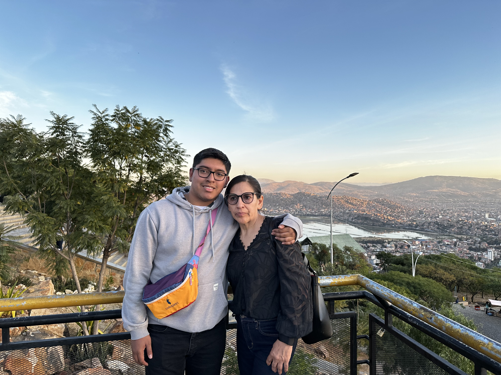
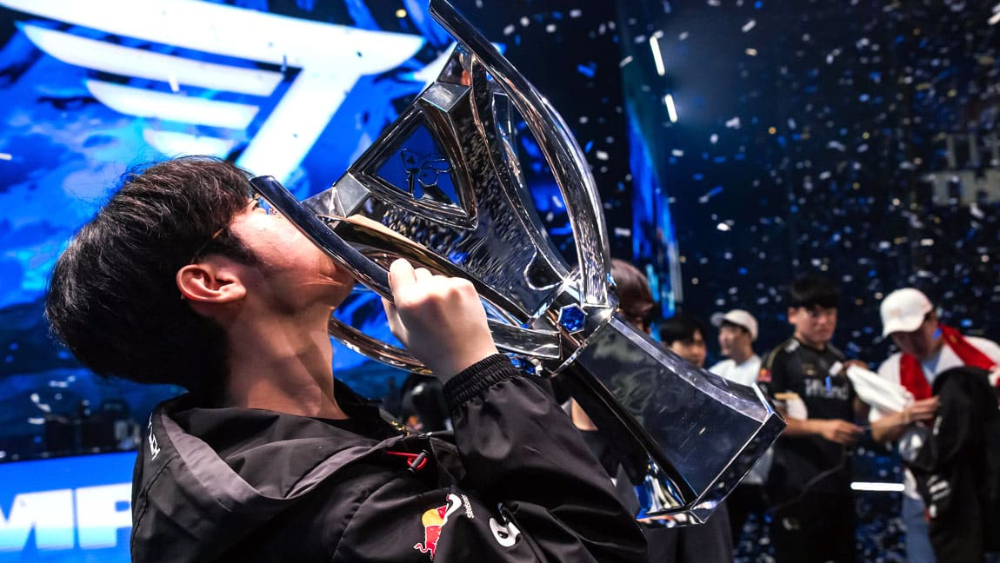
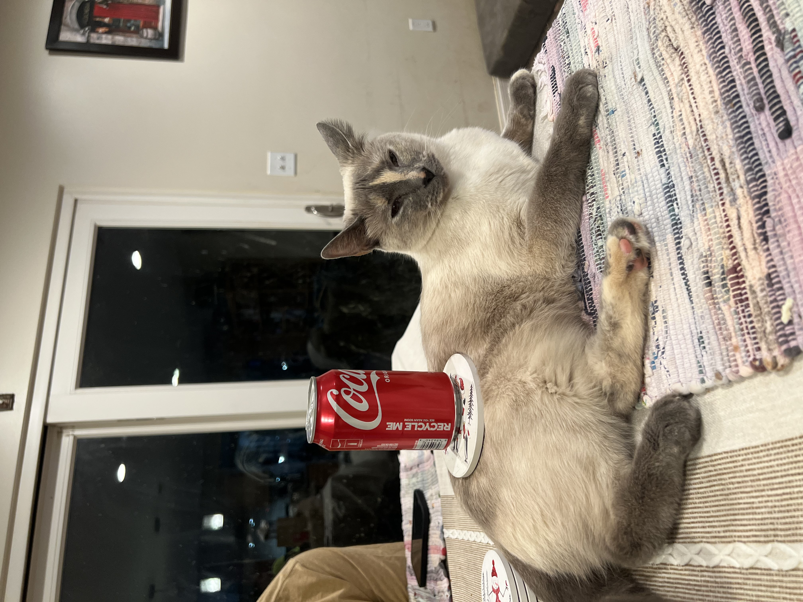

Who is Jason?
An introduction to me. Currently I am 24 years old.

Early Life
I grew up in the Northern Virginia life, I guess you could say I'm somewhat accustomed to the city life. I enjoy exploring and taking public transit, as well as driving long distances with people I love. Road trips are awesome, I believe they provide me a therapy for me to collect my thoughts.
After graduating high school I went of to Ohio where I met my bestfriend and had many rewarding experiences. I'm a little introverted so it takes time for me to really express myself. This is something I've been working on improving for myself.
I moved back to Northern Virginia after University because family is very important to me.
Hobbies

I love E-Sports, I find that for my mind being competetive and improving my reflexes is something very important to me. My favorite organization has been T1, where I have a bit of a different story than most. T1 is a highly prestigious organization with the most championships, however I joined during their biggest slump. For me watching them play gave me a dedication and hope that I'll never lose. I watched T1 lose year after year ever wondering if they'd finally return to their form. I'm someone who likes to take a lot of lessons to heart, so I believe for me I've tried to always stay true to who I am and always have hope. Sometimes it's harder than others, but I know who I am and what I want.

Aside from that, I like soccer (and yes I'm a Real Madrid fan), as well as casually keeping up with other sports. I have two German Shepherds that I love and a Siamese cat who has become my entire heart. I enjoy being active, I have asthma but I don't let that define me.

My biggest hobby, or I should say pass time is working on cars. Yes of course! The stereotypical 20 year old latino (not really!). My mind likes components and to understand how they work, for me working on vehicles is about the components and about the struggle. Laboring and working on a bolt that breaks will test your patience. In these moments is where I build my character and practice my morals and beliefs.